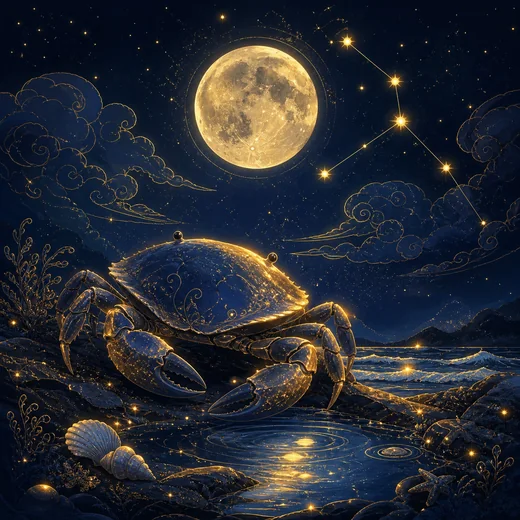

♋ 게자리 — 성격·연애·궁합·오늘의 운세
게자리 한눈에 보기

게자리는 하지에서 시작합니다. 태양이 가장 높이 오른 뒤 다시 내려가기 시작하는 자리라, 점성술에서 게자리는 '밖으로 뻗던 힘이 안으로 돌아오는 지점'을 맡습니다. 신화에서는 헤라클레스가 히드라와 싸울 때 헤라가 보낸 게가 이 별자리가 되었다고 전합니다. 이길 수 없는 상대 앞에서도 자기 편을 위해 집게를 든 작은 존재라는 이미지가 남아 있습니다.
원소는 물이고 양태는 활동궁, 수호성은 달입니다. 물은 감정과 공감, 활동궁은 먼저 움직이는 성질, 달은 보호와 주기적인 변화를 뜻합니다. 그래서 게자리는 '먼저 챙기는 자리'가 됩니다. 누가 힘든지 가장 빨리 알아채고, 말하지 않아도 필요한 것을 준비해두는 쪽입니다.
강점은 기억력과 정서적 지구력입니다. 사람과의 일을 오래 기억하고, 받은 것도 준 것도 잊지 않습니다. 자기 사람이라고 판단한 대상에게는 놀랄 만큼 큰 힘을 냅니다. 조직에서는 분위기를 만드는 사람이고, 가족과 오래된 친구 관계에서 가장 안정적인 축이 됩니다.
약점은 방어의 방식에서 나옵니다. 상처를 받으면 말로 따지는 대신 껍질 안으로 들어가 버립니다. 상대는 무슨 일인지 모르는 채 거리만 느끼게 되고, 게자리는 혼자 서운함을 키웁니다. 달이 다스리는 자리라 감정의 파도가 주기적으로 오는데, 이 파도를 상황 탓으로 돌리면 관계가 어려워집니다. 감정과 사실을 분리해 말로 꺼내는 연습이 이 별자리에게 가장 큰 성장입니다.
게자리의 연애
쉽게 마음을 열지 않지만 한번 열면 깊습니다. 상대가 안전한 사람인지 오래 확인하고, 확인이 끝나면 아낌없이 내어줍니다. 기념일과 사소한 대화를 오래 기억하고, 챙기는 것으로 애정을 표현합니다.
감정의 온도 변화가 있는 편이라, 이유 없이 가라앉는 날이 옵니다. 이때 혼자 삼키면 상대는 원인을 자기에게서 찾다가 지칩니다. '오늘은 기분이 내려간 날'이라고 알려주는 한마디만으로 대부분의 오해가 사라집니다.
이별에 특히 오래 아파하는 쪽입니다. 관계가 끝나도 기억이 남아 있어 정리에 시간이 걸립니다. 그만큼 오래 함께할 사람을 고를 때 신중해야 하고, 그 신중함 자체가 이 별자리의 안전장치입니다.
게자리의 일과 적성
사람을 돌보고 지키는 일에서 강합니다. 인사, 교육, 상담, 의료, 요식, 부동산처럼 사람의 생활에 직접 닿는 분야가 잘 맞습니다. 조직 안에서는 팀의 사기와 분위기를 관리하는 역할에서 존재감이 큽니다.
활동궁이라 지시를 기다리기보다 필요한 것을 먼저 챙기는 편이고, 그래서 조용히 팀을 이끄는 자리에 자주 서게 됩니다. 다만 공을 드러내지 않아 기여가 저평가되기 쉬우니, 한 일을 기록으로 남기는 습관이 필요합니다.
주의할 지점은 감정과 일의 분리입니다. 사람에 대한 서운함이 업무 판단으로 번지면 손해는 대개 본인에게 돌아옵니다. 개인적인 감정은 개인적인 자리에서 처리하고, 일에서는 사실만 다루는 선을 지키는 편이 안전합니다.
게자리 궁합
잘 맞는 별자리 — 전갈자리, 물고기자리
같은 물 원소끼리는 말하지 않은 감정을 읽어냅니다. 전갈자리와는 서로에 대한 몰입의 깊이가 비슷해 신뢰가 빠르게 쌓이고, 물고기자리와는 정서의 결이 부드럽게 맞아 함께 있는 것만으로 편안합니다. 설명을 요구하지 않는 관계라는 점이 이 별자리에게는 가장 큰 안정입니다.
조율이 필요한 별자리 — 양자리, 천칭자리
양자리는 먼저 움직이고 나중에 설명하는 자리라, 확인이 먼저인 게자리에게는 불안하게 느껴집니다. 천칭자리와는 둘 다 활동궁이라 관계의 주도권이 겹치고, 감정을 다루는 방식도 한쪽은 공감, 한쪽은 균형이라 어긋납니다. 서로의 방식을 틀렸다고 보지 않는 합의가 필요한 조합입니다.
게자리의 2026년
게자리의 한 해는 하지 무렵부터 다시 시작합니다. 6월 하순에서 7월 중순, 태양이 자기 자리로 돌아오는 구간에 정한 방향이 한 해의 기조가 됩니다. 2026년에도 연초보다 한여름에 세운 계획이 더 오래갑니다.
활동궁 물 원소의 과제는 경계입니다. 챙기는 힘이 강한 만큼 남의 문제까지 떠안기 쉬운데, 2026년에는 도울 수 있는 범위를 미리 정해두는 편이 좋습니다. 다 짊어지고 지쳐서 물러나는 것보다, 할 수 있는 만큼을 오래 하는 쪽이 결과적으로 더 많은 사람을 돕습니다.
자주 묻는 질문
게자리는 몇 월생인가요?
6.22~7.22 사이에 태어난 사람이 게자리입니다. 다만 태양이 별자리 경계를 넘는 시각은 해마다 하루 안팎으로 달라지므로, 경계일 출생이면 날짜표 대신 별자리 운세 페이지에서 생년월일로 판정하는 편이 정확합니다.
게자리와 잘 맞는 별자리는?
전갈자리와 물고기자리가 대표적입니다. 같은 물 원소끼리는 말하지 않은 감정을 읽어냅니다. 전갈자리와는 서로에 대한 몰입의 깊이가 비슷해 신뢰가 빠르게 쌓이고, 물고기자리와는 정서의 결이 부드럽게 맞아 함께 있는 것만으로 편안합니다. 설명을 요구하지 않는 관계라는 점이 이 별자리에게는 가장 큰 안정입니다. 반대로 양자리와 천칭자리는 조율이 필요한 조합입니다.
게자리 성격의 핵심은 무엇인가요?
물 원소, 활동궁, 수호성 달의 조합으로 봅니다. 이 셋이 겹치는 지점이 게자리의 성격을 만듭니다. 자세한 내용은 위 본문에서 확인하세요.